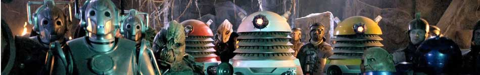

| Home | The Doctors | The Companions | The Villains |
|  | |||
| cf
MissyThe Master managed to escape from the pocket universe in which Gallifrey existed. (TV: Death in Heaven) At some point, after his botched resurrection, the Master regenerated into a new body that was female. As such, she adapted her name of "the Master" into "Missy". Working with the Cybermen, Missy took over the 3W Institute, an organisation founded by Dr Skarosa to care for dead bodies, in order to create a Cyberman army of the dead. She uploaded dying minds to the Nethersphere; a virtual reality housed within a matrix data slice. This reality changed and rewrote the minds, removing their emotions before re-downloading them into their Cyber-converted bodies. (TV:Dark Water) At some point, Missy gave Clara Oswald the Doctor's phone number, claiming that it was a tech support line, leading to Clara to meet the Eleventh Doctor. Missy kept the Doctor and Clara together into the Doctor's twelfth incarnation by placing an ad in a newspaper, believing that Clara was just the right companion to attract the Doctor's interest and make it easier for Missy to manipulate him emotionally. (TV: The Bells of Saint John, Deep Breath, Death in Heaven) Missy went along the Doctor's timeline and greeted people who died in connection with him, (TV: Death in Heaven) such as the Half-Face Man (TV: Deep Breath) and Gretchen Carlisle. (TV:Into the Dalek) |